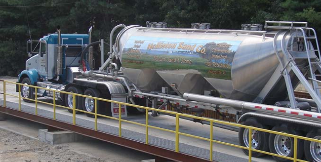
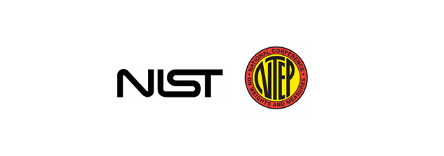

Memahami lembaga hukum dan pedoman pertimbangan
Berat merupakan ukuran universal. Bisnis, lembaga federal dan lokal, produsen timbangan, dan lain-lain berkepentingan untuk memastikan informasi berat yang akurat. Peraturan penggunaan berat dalam transaksi bisnis, undang-undang perjalanan di jalan raya, dan verifikasi peralatan menyediakan standar yang harus dipahami oleh pengguna timbangan.
Peraturan Berat Kendaraan di Jalan Raya
Terlepas dari apa yang diangkut truk Anda, otoritas transportasi regional dan/atau federal menentukan berat maksimum yang diizinkan di jalan umum. Ini sering didefinisikan sebagai berat maksimum yang diizinkan untuk konfigurasi as tertentu. Mungkin juga ada berat kotor kendaraan keseluruhan maksimum, tetapi terkadang peraturan berbasis as berdiri sendiri.
Tanyakan kepada otoritas transportasi di wilayah hukum Anda untuk mengetahui batas jalan yang sah untuk jenis truk yang akan Anda gunakan. Beberapa lokasi menggunakan timbangan truk mereka untuk memuat kendaraan mereka dengan berat maksimum yang diizinkan tanpa melebihi batas. Truk yang kelebihan berat dapat mengakibatkan denda yang besar.
Pastikan konfigurasi timbangan yang Anda pilih mampu memberikan informasi yang Anda butuhkan, terutama jika Anda berencana untuk memuat truk mendekati batas yang diizinkan. Misalnya, timbangan yang dirancang untuk menimbang seluruh truk mungkin tidak memberikan bobot setiap kelompok as kecuali timbangan tersebut merupakan timbangan multi-as.
Aplikasi Legal untuk Perdagangan
Jika timbangan Anda akan digunakan dalam transaksi bisnis, aplikasi Anda harus "sah untuk diperdagangkan." Aplikasi yang sah untuk diperdagangkan paling sering diharuskan untuk memenuhi serangkaian persyaratan federal, lokal dan/atau regional. Ini dapat mencakup kriteria untuk konstruksi, spesifikasi timbangan, prinsip pengoperasian dan interval kalibrasi yang dimaksudkan untuk melindungi transaksi bisnis dari ketidakakuratan timbangan atau penipuan.
Aplikasi yang tidak sah untuk diperdagangkan dapat mencakup timbangan yang digunakan secara eksklusif untuk memeriksa beban gandar yang tepat dan/atau kepatuhan terhadap batas berat maksimum jalan raya. Meskipun itu adalah penggunaan penting, itu bukan aplikasi yang terkait dengan perdagangan, dan karenanya mungkin tidak diharuskan untuk memenuhi pedoman yang sama.
( Membeli atau menjual barang dalam jumlah besar berdasarkan berat berarti timbangan harus mematuhi peraturan yang sah untuk perdagangan )
Otoritas Metrologi
Metrologi didefinisikan sebagai "studi ilmiah tentang pengukuran." Sebagian besar lokasi mengandalkan otoritas metrologi yang diakui untuk standar pengukuran guna memastikan kesetaraan dalam transaksi bisnis. Terkait timbangan truk, lembaga tersebut akan memberikan sertifikasi untuk peralatan dan komponen yang memenuhi persyaratan kinerjanya.
OIML
Di banyak negara Eropa dan Asia, Organisasi Internasional Metrologi Legal (OIML, www.oiml.org, berkantor pusat di Prancis) menetapkan standar yang harus dipenuhi oleh perangkat pengukuran untuk aplikasi komersial. Termasuk timbangan kendaraan dan komponennya, seperti Load Cells.
OIML secara berkala memperbarui rangkaian rekomendasi, panduan, dan laporan serta dokumen lainnya. Perangkat yang mematuhi spesifikasi OIML akan memiliki klasifikasi OIML. Untuk komponen timbangan kendaraan, seperti jembatan timbang dan Load Cells, klasifikasi ini akan menentukan toleransi untuk keakuratan dan kapasitasnya, yang diverifikasi melalui pengujian standar. Misalnya, dokumen OIML R 60 menguraikan karakteristik kinerja untuk Load Cells.
NIST & NTEP
Di Amerika Serikat, peraturan ditetapkan oleh Buku Pegangan 44, “Spesifikasi, Toleransi, dan Persyaratan Teknis Lainnya untuk Perangkat Penimbangan dan Pengukuran” dari Institut Nasional Standar dan Teknologi (NIST www.nist.gov). Buku ini paling sering disebut sebagai Buku Pegangan 44 atau hanya H-44, dan direvisi setiap tahun. H-44 menyediakan spesifikasi federal untuk kinerja timbangan truk. Buku ini juga mencakup persyaratan pengguna, atau tugas yang harus dilakukan oleh pengguna dan pemilik timbangan.
Perangkat yang ditujukan untuk aplikasi komersial akan memiliki sertifikasi National Type Evaluation Program (NTEP) yang dikeluarkan oleh National Conference on Weights and Measures (NCWM). Ini menandakan bahwa produk atau komponen telah diuji untuk memenuhi persyaratan NIST H-44.
Lokasi Lainnya
Banyak otoritas pengukuran dan bobot (W&M) federal dan provinsi lainnya di seluruh dunia mengakui standar organisasi yang disebutkan di atas. Banyak yang akan menerima perangkat yang memiliki sertifikasi dari salah satu lembaga tersebut. Otoritas pengukuran dan bobot regional Anda dapat memberikan perincian lebih lanjut mengenai sertifikasi yang diterimanya untuk peralatan penimbangan kendaraan komersial.
Contoh:
Canada
Badan Kanada, Measurement Canada, mencatat bahwa Load Cells dalam perangkat perdagangan harus sesuai dengan peraturan NTEP atau OIML. Sumber: Buletin M-25
Australia
National Measurement Institute (NMI) di Australia melakukan pengujian dan sertifikasi tambahan untuk Load Cells jembatan timbang komersial berdasarkan standar OIML. Sumber: NMI R 60
Badan Pengawas Metrologi
Meskipun badan metrologi dapat memberikan sertifikasi untuk desain produk baru, penegakan standar pengukuran yang berkelanjutan diserahkan kepada badan regulasi metrologi setempat, yang sering dikenal sebagai departemen berat dan pengukuran (W&M). Departemen-departemen ini melakukan pengujian tahunan terhadap pompa bensin/bensin, timbangan konter makanan, timbangan truk, dan lainnya.
Anda perlu menghubungi departemen W&M setempat, karena perwakilan sering kali perlu melakukan inspeksi, pengujian, kalibrasi, dan sertifikasi sebelum timbangan baru Anda dapat digunakan. Sebaiknya hubungi mereka di awal proses untuk memastikan Anda memahami persyaratan mereka. Beri tahu mereka bahwa Anda akan memasang timbangan truk dan tanyakan semua peraturan yang berkaitan dengan pemasangan dan pengoperasian timbangan truk di negara bagian atau provinsi Anda. Anda mungkin akan menghubungi mereka secara berkala selama masa pakai timbangan, karena mereka mungkin perlu melakukan inspeksi dan pengujian rutin untuk mensertifikasi ulang timbangan.
Bergantung pada lokasi dan bisnis Anda, Anda mungkin juga harus memenuhi persyaratan badan regulasi lainnya. Misalnya, ini mungkin termasuk otoritas kode bangunan negara bagian dan lokal, Layanan Inspeksi Gandum Federal, departemen pertanian negara bagian dan federal, badan bea cukai federal, dan departemen transportasi. Susun daftar Anda sendiri dan pastikan peraturan yang sesuai dipatuhi. Pemasok timbangan Anda harus dapat membantu Anda memahami badan mana yang harus dilibatkan.
( Pemeriksaan kalibrasi dapat dilakukan dengan beban uji besar yang dimuat ke kereta bermotor. Teknisi menggerakkan kereta ke berbagai titik pada timbangan dengan jumlah beban yang berbeda untuk menguji keakuratan timbangan yang konsisten. )